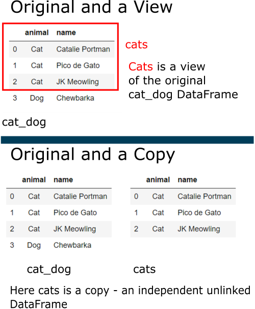
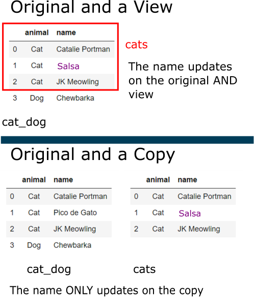
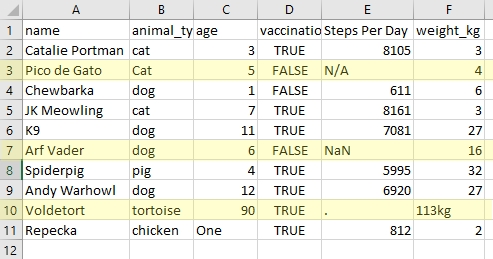

Chapter 5 - Cleaning Data

This is a HTML document. The Introduction to Python course is written and intended to be used in a Jupyter Notebook file. These HTML documents have been made available for users who require screen readers or other accessibility needs. These HTML documents have been tested, but if you notice any errors or any compatibility issues please contact us on the GSS Capability email inbox.
If you are using a screen reader you will need to set your punctuation level (sometimes called verbosity) to full, especially for the code sections.
Chapter Overview and Learning Objectives:
-
- Packages
- Data
-
- Using .loc[]
- Using .str methods
- Changing column types
-
- Changing column name values
- Removing spaces
- Lower Case
-
- What are missing values?
- Null values when reading in data
- Filling null values
- Dropping null values
This chapter covers the cleaning of our data, which is important to do as a follow up to obtaining the dataset we wish to work with (often we will view, merge etc first to obtain the full dataset we want, then start cleaning it!). Some of the concepts we introduce here are more complex than those in Chapter 4, so we wanted you to have more experience of working with Python and Pandas before we utilise them.
1 Packages and Datasets
1.1 Packages
As a reminder, we should always import our packages at the top of our script. In this session we will use pandas, and give it the nickname pd.
1.2 Exercise
Import Pandas and give it the nickname pd
import pandas as pd1.3 Datasets
Good practice dictates that we should import our datasets at the top of our script too. In this session we’ll be using the following:
| variable name | file name | |
|---|---|---|
| animals | animals.csv | |
| titanic | titanic.xlsx | |
| pun_animals | pun_animals.csv |
As with the previous chapter (and the next) this will also be an exercise, allowing you to practice those commands you utilise over and over when writing Python scripts.
1.4 Exercise
Load in these datasets listed above.
You can check your variables are loaded by using %whos in Jupyter. In Spyder, VSCode or other IDE’s they should appear in your variable explorer.
animals = pd.read_csv("../data/animals.csv")
titanic = pd.read_excel("../data/titanic.xlsx")
pun_animals = pd.read_csv("../data/pun_animals.csv")Remember that Chapter 3 covered these topics in depth, so feel free to review this if you need to!
2 Copies and Views
It’s easy to think that the actions done so far, like filtering and copying create a brand new version of a DataFrame. However, this isn’t always the case, as sometimes they create what’s known as a view of the data.
In the image below, cats highlighted in red is a subset or view of the original cat_dog DataFrame, where as on the bottom it’s a new unique object called cats.

2.1 Generating a Copy
Sometimes when experimenting with code it’s desirable to create another version of our DataFrame to experiment around on. You may think this done as following process:
animals_new = animals
However this creates a view of our DataFrame, and as we’re experimenting we may not want to have our effects filter though. So how do we address this?
2.1.1 Example
We can ensure we’re working on a fresh copy of a DataFrame by using .copy() and as such, any transformations applied to this copy will not impact the original.
animals_copy = animals.copy() # The correct way to create a copy of a DataFrameViews and copies can potentially create issues when we try and make changes to DataFrames.

Here I’m changing the name of Pico de Gato to Salsa. Pico de gallo is a kind of salsa, “gato” is Spanish for cat (The best jokes are always the ones you have to explain).
Depending on my desired outcome I may want my changes to apply to both cat_dog and cats, like on the top by modifying a view, or I may just want them to apply to cats by modifying a copy like on the bottom.
When performing these kinds of operations, you may see a “SettingWithCopyWarning” warning. This is a warning, not an error so your code will still work; but if you see this you should think about what you want the outcome to be.
Common reasons for this include what’s known as chained assignment.
2.1.2 Example
The cell below uses chained assignment to update the words Bull in the animals_copy DataFrame to Cow. Because this is happening in a slice, created with animals_copy[animals_copy[“AnimalGroupParent”] == “Bull”] we get this error.
animals_copy[animals_copy["AnimalGroupParent"] == "Bull"]["AnimalGroupParent"] = "cow"<string>:1: SettingWithCopyWarning:
A value is trying to be set on a copy of a slice from a DataFrame.
Try using .loc[row_indexer,col_indexer] = value instead
See the caveats in the documentation: https://pandas.pydata.org/pandas-docs/stable/user_guide/indexing.html#returning-a-view-versus-a-copyThis suggests using .loc[] instead, which we will see in the next section. When the filter is applied to animals2 it appears as if the action has not happened. It has, but has not been applied to animals_copy, just the slice in the cell above.
animals_copy[animals_copy["AnimalGroupParent"]== "Bull"] # We should get 0 results here IncidentNumber DateTimeOfCall CalYear ... AnimalClass Code London
1055 165500101 28/09/2010 19:17 2010 ... Mammal 00AQ Inner London
[1 rows x 19 columns]Certain methods update the original DataFrame and not a copy of it, for example .loc[], .fillna() and dropna() which we will use later. This is quite a technical element for an introduction course, so don’t worry if you don’t understand it at the moment. The fapproaches used throughout this course are considered good practice when it comes to this issue.
Generally speaking:
- All operations generate a copy
- If inplace=True is provided, it will modify in-place (updates the original); only some operations support this
- An indexer that sets, e.g. .loc/.iloc/.iat/.at will set inplace.
- An indexer that gets on a single-dtyped object is almost always a view (depending on the memory layout it may not be that’s why this is not reliable). This is mainly for efficiency. (the example from above is for .query; this will always return a copy as its evaluated by numexpr)
- An indexer that gets on a multiple-dtyped object is always a copy. Stack Overflow Source
This numpy tutorial discusses copies and views in more detail. The rules for DataFrames are less explicit, but more information can be found with this Dataquest tutorial
3 Updating Values
3.1 Using .loc[]
We’ve already seen one action of .loc[] when we created our new Boolean column with the missing values in Chapter 4. This very handy method for indexing can be used to access groups of rows and columns by either using labels or a Boolean array. In fact you could do any of the selection we did in Chapter 4 this way. In the Reference Material (chapter 8) we explore how to do this.
In this chapter we’re going to use .loc[] to update some values.
3.1.1 Example
In the cell below we’re looking at the unique values of the AnimalGroupParent column. Here we can see two values Cow and Bull that relate to the same kind of animal.
animals[(animals["AnimalGroupParent"] == "Bull") | (animals["AnimalGroupParent"] == "Cow")].head() IncidentNumber DateTimeOfCall CalYear ... AnimalClass Code London
1055 165500101 28/09/2010 19:17 2010 ... Mammal 00AQ Inner London
1104 188198101 06/11/2010 09:52 2010 ... Mammal 00AG Inner London
1138 207392101 09/12/2010 17:36 2010 ... Mammal 00AR Outer London
2215 100125121 26/08/2012 12:28 2012 ... Mammal 00AS Outer London
2257 113544121 19/09/2012 12:54 2012 ... Mammal 00AR Outer London
[5 rows x 19 columns]So how do we update this with .loc[]?
# Update the values using .loc[]
animals.loc[animals["AnimalGroupParent"] == "Bull", "AnimalGroupParent"] = "Cow"| IncidentNumber | DateTimeOfCall | CalYear | FinYear | TypeOfIncident | PumpCount | PumpHoursTotal | HourlyNominalCost(£) | IncidentNominalCost(£) | FinalDescription | AnimalGroupParent | PropertyType | SpecialServiceTypeCategory | SpecialServiceType | Borough | StnGroundName | AnimalClass | Code | London | |
|---|---|---|---|---|---|---|---|---|---|---|---|---|---|---|---|---|---|---|---|
| 1055 | 165500101 | 28/09/2010 19:17 | 2010 | 2010/11 | Special Service | 1 | 3 | 260 | 780 | LARGE BULL IN DISTRESS | Bull | Other outdoor location | Other animal assistance | Animal assistance - Lift heavy livestock animal | Harrow | Harrow | Mammal | 00AQ | Inner London |
| 1104 | 188198101 | 06/11/2010 09:52 | 2010 | 2010/11 | Special Service | 1 | 2 | 260 | 520 | SICK COW STUCK AND UNABLE TO BE RAISED | Cow | Barn | Other animal assistance | Animal assistance - Lift heavy livestock animal | Camden | Kentish Town | Mammal | 00AG | Inner London |
| 1138 | 207392101 | 09/12/2010 17:36 | 2010 | 2010/11 | Special Service | 3 | 6 | 260 | 1560 | COW STUCK IN MUD WATER RESCUE LEVEL 2 | Cow | River/canal | Animal rescue from water | Animal rescue from water - Farm animal | Havering | Hornchurch | Mammal | 00AR | Outer London |
| 2215 | 100125121 | 26/08/2012 12:28 | 2012 | 2012/13 | Special Service | 1 | 1 | 260 | 260 | COW IN DISTRESS IN GRAND UNION CANAL | Cow | River/canal | Animal rescue from water | Animal rescue from water - Farm animal | Hillingdon | Ruislip | Mammal | 00AS | Outer London |
| 2257 | 113544121 | 19/09/2012 12:54 | 2012 | 2012/13 | Special Service | 1 | 1 | 260 | 260 | COW STUCK IN MUD | Cow | Animal harm outdoors | Other animal assistance | Assist trapped livestock animal | Havering | Wennington | Mammal | 00AR | Outer London |
Notice that .loc[] takes two arguments:
The first is my conditional look up (which the function will scan the dataframe for). In the AnimalGroupParent column of the animals DataFrame, look for the value that is “Bull”.
The second is the column I wish to update, here I wish to update/overwrite the column AnimalGroupParent.
Now that the two arguments have told .loc[] the exact value(s) we are looking for, we use = and give the new value we want to update them to; here, this is Cow.
Let’s look at the updated DataFrame:
# Update the values using .loc[]
animals.loc[animals["AnimalGroupParent"] == "Bull", "AnimalGroupParent"] = "Cow"
# Filter to show my new DataFrame (notice the top row was Bull and is now Cow)
animals[animals["AnimalGroupParent"] == "Cow"].head()| IncidentNumber | DateTimeOfCall | CalYear | FinYear | TypeOfIncident | PumpCount | PumpHoursTotal | HourlyNominalCost(£) | IncidentNominalCost(£) | FinalDescription | AnimalGroupParent | PropertyType | SpecialServiceTypeCategory | SpecialServiceType | Borough | StnGroundName | AnimalClass | Code | London | |
|---|---|---|---|---|---|---|---|---|---|---|---|---|---|---|---|---|---|---|---|
| 1055 | 165500101 | 28/09/2010 19:17 | 2010 | 2010/11 | Special Service | 1 | 3 | 260 | 780 | LARGE BULL IN DISTRESS | Cow | Other outdoor location | Other animal assistance | Animal assistance - Lift heavy livestock animal | Harrow | Harrow | Mammal | 00AQ | Inner London |
| 1104 | 188198101 | 06/11/2010 09:52 | 2010 | 2010/11 | Special Service | 1 | 2 | 260 | 520 | SICK COW STUCK AND UNABLE TO BE RAISED | Cow | Barn | Other animal assistance | Animal assistance - Lift heavy livestock animal | Camden | Kentish Town | Mammal | 00AG | Inner London |
| 1138 | 207392101 | 09/12/2010 17:36 | 2010 | 2010/11 | Special Service | 3 | 6 | 260 | 1560 | COW STUCK IN MUD WATER RESCUE LEVEL 2 | Cow | River/canal | Animal rescue from water | Animal rescue from water - Farm animal | Havering | Hornchurch | Mammal | 00AR | Outer London |
| 2215 | 100125121 | 26/08/2012 12:28 | 2012 | 2012/13 | Special Service | 1 | 1 | 260 | 260 | COW IN DISTRESS IN GRAND UNION CANAL | Cow | River/canal | Animal rescue from water | Animal rescue from water - Farm animal | Hillingdon | Ruislip | Mammal | 00AS | Outer London |
| 2257 | 113544121 | 19/09/2012 12:54 | 2012 | 2012/13 | Special Service | 1 | 1 | 260 | 260 | COW STUCK IN MUD | Cow | Animal harm outdoors | Other animal assistance | Assist trapped livestock animal | Havering | Wennington | Mammal | 00AR | Outer London |
We see that our first row returned has the description “Bull in distress”, which was previously Bull in AnimalGroupParent. We did this for analysis purposes so we could look at all bovine related incidents together.
3.2 Exercise
Use .loc[] to change the value Lamb to Sheep in the animals DataFrame.
animals.loc[animals['AnimalGroupParent'] == "Lamb", "AnimalGroupParent"] = "Sheep"
# Filter to show the head of the new DataFrame
animals[animals['AnimalGroupParent'] == "Sheep"].head()| IncidentNumber | DateTimeOfCall | CalYear | FinYear | TypeOfIncident | PumpCount | PumpHoursTotal | HourlyNominalCost(£) | IncidentNominalCost(£) | FinalDescription | AnimalGroupParent | PropertyType | SpecialServiceTypeCategory | SpecialServiceType | Borough | StnGroundName | AnimalClass | Code | London | |
|---|---|---|---|---|---|---|---|---|---|---|---|---|---|---|---|---|---|---|---|
| 105 | 44593091 | 18/03/2009 11:46 | 2009 | 2008/09 | Special Service | 1 | 1 | 255 | 255 | SHEEP IN RIVER,J15,WR1 | Sheep | River/canal | Animal rescue from water | Animal rescue from water - Farm animal | Waltham Forest | Chingford | Mammal | 00BH | Outer London |
| 776 | 72228101 | 10/05/2010 23:26 | 2010 | 2010/11 | Special Service | 2 | 3 | 260 | 780 | LAMB IN STREAM | Sheep | Lake/pond/reservoir | Animal rescue from water | Animal rescue from water - Farm animal | Enfield | Chingford | Mammal | 00AK | Outer London |
| 2198 | 95952121 | 19/08/2012 17:05 | 2012 | 2012/13 | Special Service | 1 | 1 | 260 | 260 | LAMB TRAPPED IN WIRE FENCING | Sheep | Fence | Other animal assistance | Animal assistance involving wild animal - Other action | Enfield | Chingford | Mammal | 00AK | Outer London |
| 2396 | 161316121 | 25/12/2012 22:57 | 2012 | 2012/13 | Special Service | 1 | 1 | 260 | 260 | ONE SHEEP TRAPPED IN FENCING | Sheep | Animal harm outdoors | Other animal assistance | Assist trapped livestock animal | Enfield | Enfield | Mammal | 00AK | Inner London |
| 3710 | 52040151 | 29/04/2015 15:10 | 2015 | 2015/16 | Special Service | 1 | 2 | 298 | 596 | SHEEP TRAPPED INTO RIVER LEA | Sheep | River/canal | Animal rescue from water | Animal rescue from water - Farm animal | Enfield | Enfield | Mammal | 00AK | Outer London |
3.3 Using .str methods
If your columns are of the object type (a.k.a strings or text values) we can manipulate these using .str methods. This is really important where our data contains the same values but different capitalisation; remember that Python would treat “Cat” and “cat” as two different values due to its case sensitive nature.
3.3.1 Example - Lowercasing
# Note the values "cat" and "Cat" both exist.
pun_animals["animal_type"].unique()array(['cat', 'Cat', 'dog', 'pig', 'tortoise', 'chicken'], dtype=object)We may want to make all of our data in pun_animals DataFrame’s animal_type column lowercase so that Python treats them as one value.
# Change Animal Group Parent to lower
pun_animals["animal_type"] = pun_animals["animal_type"].str.lower()
# View the change by looking at the unique values
pun_animals["animal_type"].unique()array(['cat', 'dog', 'pig', 'tortoise', 'chicken'], dtype=object)There’s a lot of other Python String methods for you to explore within the python documentation and many come in particularly handy when working with textual data. These take a bit of experimentation to get used to (and as such are beyond the scope of this course), but are well worth exploring.
3.4 Changing column types
One of the common frustrations in any programming language can be columns not being interpreted as we think they should. This was mentioned in Chapter 4 when we looked at .dtypes.
When we look at the .dtypes for pun_animals we can notice that all of our columns have read in as object or text values. Although, we would expect age, weight and steps_per_day to read in as numerical.
Python interprets these as objects because this preserves the original features of the column. This leaves how, and when, to update the column up to us.
In this section we’ll fix age and weight, whereas steps_per_day will be fixed in the section on missing values.
3.4.1 Example
pun_animals.dtypesname object
animal_type object
age object
vaccination bool
Steps Per Day object
weight_kg object
dtype: objectLet’s start with the age column to see how this works. The process of changing the data type of a column should be thought of as a 3-step process:
- Identify - What’s the problem with the column?
- Fix – Update or change the values to amend the issue
- Convert – Change the Data Type of the column.
The examples we’re fixing here are simplified examples using simple data, in real world datasets there will be much more to consider, but the process is essentially the same.
As pun_animals is such a small DataFrame we could just print out the whole DataFrame or our affected Series to find the error. This works when we only have 10 rows of data, but would be much harder to see with 10,000 (which, remember is small in the context of real world data)!
pun_animals["age"]0 3
1 5
2 1
3 7
4 11
5 6
6 4
7 12
8 90
9 One
Name: age, dtype: objectSometimes, for issues that permeate throughout the entire dataset, like commas in numerics (100,000) we can use methods like .head() and .tail() to identify the issue, but there are other useful methods too:
A useful python string method is .str.isalpha() . This returns us a Boolean series, True if the string contains alphabet values (e.g a combination of A-Z) and False if it contains something else, like numeric values (e.g only the values 0-9).
Likewise, .str.isalnum() will return True if the string contains alphabetic or numeric values, but False if there are symbols.
pun_animals["age"].str.isalpha()0 False
1 False
2 False
3 False
4 False
5 False
6 False
7 False
8 False
9 True
Name: age, dtype: boolWe can put this in a filter to just return the row that’s alpha and therefore “wrong”.
pun_animals[pun_animals["age"].str.isalpha()]| name | animal_type | age | vaccination | Steps Per Day | weight_kg | |
|---|---|---|---|---|---|---|
| 9 | Repecka | chicken | One | TRUE | 812 | 2 |
Here the input was One as a word, which is not a numeric like the rest of the column. This completes step we as we have identified the issue.
Step 2 is where we fix the issue, which can be done in a variety of different ways. Here I’m going to use .loc[] but you can use .str methods too.
pun_animals.loc[pun_animals["age"] == "One", "age"] = 1
# Print the Series to see the change
pun_animals["age"]
# This will also work
# pun_animals = pun_animals["age"].str.replace("One", "1") # Note here the "1" must be a string.0 3
1 5
2 1
3 7
4 11
5 6
6 4
7 12
8 90
9 1
Name: age, dtype: objectYou may notice that even though we have now “fixed” the problem, the “One” is now 1 as expected, the dtype of the column is still object. Now we can move onto step 3, changing the dtype.
There are a few ways of converting the type. Here we’ll use pd.to_numeric() from pandas, but we can also use .astype(“int64”) that we saw in Chapter 4.
pun_animals["age"] = pd.to_numeric(pun_animals["age"])
# Check out the dtypes change
pun_animals["age"].dtypesdtype('int64')Something that’s important to note here is that this conversion using pd.to_numeric() only works because we’ve already dealt with the issue in the column that was causing it to be read as an object, otherwise Python would throw an error.
If we try running this on the weight_kg column; we’ll get an error. This is because we’ve not fixed the problem yet.
# This Cell will cause an error!
pun_animals["weight_kg"] = pd.to_numeric(pun_animals["weight_kg"])3.5 Exercise
Change the weight_kg column to a float datatype.
Remember the 3 step process:
- Identify the problem
- Fix the problem
- Convert the Datatype
Hint: Try inverting (with a ~) the filter statement using .str.isdigit() may help you find the errant value!
# Change the weight_kg column to a int datatype.
# 1 - Identify
print(pun_animals[~pun_animals["weight_kg"].str.isdigit()])
# Filtering pun animals for the inverse (~) of the .isdigit() will return the one that is not a digit
# 2 - Fix Change the "113kg" value to 113 name animal_type age vaccination Steps Per Day weight_kg
8 Voldetort tortoise 90 True . 113kgpun_animals.loc[pun_animals["weight_kg"] == "113kg", "weight_kg"] = 113
# OR pun_animals['weight_kg'] = pun_animals['weight_kg'].str.replace("113kg", "113")
# Another option is replacing the letters kg with nothing (an empty string) which applies to all errant values, definitely better if there is more than one!
# pun_animals['weight_kg'] = pun_animals['weight_kg'].str.replace("kg", "")
# 3 - Convert the type
pun_animals["weight_kg"] = pun_animals["weight_kg"].astype("float64")
# OR pun_animals["weight_kg"] = pd.to_numeric(pun_animals["weight_kg"])
print(pun_animals["weight_kg"].dtypes)float64You may get two different errors here
Can only use .str accessor with string values, which use np.object_ dtype in pandas
C:-packages.py:798: FutureWarning: elementwise comparison failed; returning scalar instead, but in the future will perform elementwise comparison result = getattr(x, name)(y)
You’ve already changed the column to the numeric data type and you’re trying to run the replace values part of your code again – therefore this is failing. Try checking the datatype of your column, or searching for the error again to see if you need to do anything else.
4 Changing Column Names
As we’ve seen so far Python is not particularly fussy about what our column names are; but we will often want to change them for good practice purposes and to make the cleaning process easier. In general we should have column names that:
- Avoid spaces (use underscores),
- Not start with a number,
- Remove symbols where possible,
- Use lower case letters.
Keeping a standard convention on our column names helps us as coders to remember what they are, as well as making cross compatibility with other languages easier. Some languages can be very particular about column names.
As we’ve seen earlier we access the columns using the .columns attribute.
pun_animals.columnsIndex(['name', 'animal_type', 'age', 'vaccination', 'Steps Per Day',
'weight_kg'],
dtype='object')4.1 Renaming Columns
We can rename columns in a variety of ways, but here we’ll look at the .rename() method.
4.1.1 Example
The parameter columns = takes a dictionary with the old name as the key and the new name as the value.
The parameter and argument inplace=True means that this will update the original dataframe; we don’t have to worry about putting pun_animals= at the start.
pun_animals.rename(columns={"name": "pet_name"}, inplace=True)
pun_animals.head()| pet_name | animal_type | age | vaccination | Steps Per Day | weight_kg |
|---|---|---|---|---|---|
| Catalie Portman | cat | 3 | TRUE | 8105 | 3 |
| Pico de Gato | cat | 5 | FALSE | NaN | 4 |
| Chewbarka | dog | 1 | FALSE | 611 | 6 |
| Sir Isaac Mewton | cat | 7 | TRUE | 8161 | 3 |
| K9 | dog | 11 | TRUE | 7081 | 27 |
Note that now if you re-run any earlier code that uses the column “name” it will bring you up a “key_error” warning as this name no longer exists, this is why doing this at the earliest opportunity is preferred to cut down on maintenance.
4.1.2 Removing Spaces
To remove spaces we can use the columns.str.replace() method, which takes two arguments:
pat = - is the pattern, or thing we want to change. Note that a space is denoted by a string with a space in it, like
" ".repl = - is the replacement, or the new value we want to use. Here for example we could use an underscore (to replace a space), given as “_“.
4.1.3 Example
# Changing spaced column names to snake case
pun_animals.columns = pun_animals.columns.str.replace(pat=" ", repl="_")
pun_animals.columnsIndex(['pet_name', 'animal_type', 'age', 'vaccination', 'Steps_Per_Day',
'weight_kg'],
dtype='object')This can also be extended by using regular expressions if you have more complicated replaces to run. Chapter 4 contains some links to regular expression guides in the filter section.
4.1.4 Changing to lower case
We can use other .str. methods on our columns attribute too if needed, things like .columns.str.lower() will make our column headers lower case.
pun_animals.columns = pun_animals.columns.str.lower()
pun_animals.head()| pet_name | animal_type | age | vaccination | steps_per_day | weight_kg |
|---|---|---|---|---|---|
| Catalie Portman | cat | 3 | TRUE | 8105 | 3 |
| Pico de Gato | cat | 5 | FALSE | NaN | 4 |
| Chewbarka | dog | 1 | FALSE | 611 | 6 |
| Sir Isaac Mewton | cat | 7 | TRUE | 8161 | 3 |
| K9 | dog | 11 | TRUE | 7081 | 27 |
There are packages available that will allow you to clean your column names using a single function.
For those of you familiar with the R statistical software package Janitor there is a Python version – pyjanitor which has a method .clean_names().
These packages are not included in Anaconda, so require installation.
5 Missing Values
5.1 What are mising values?
Missing (or null) values in Pandas are represented by NaN, which is an acronym for Not a Number; but pandas uses this value to represent missing values in both numeric (float) and text (object) based columns.
When writing code ourselves we can use the value None (a keyword so syntax highlighting comes into play) to represent missing values. Another option, if you have the Numpy package installed, is using np.nan (after “import numpy as np”) to represent missing values too.
5.1.1 Example
Let’s have a quick look at this
# First import numpy as np
# Again "proper" convention says we should do this at the top of our code
# But as we're only using it for this cell, and this is a training notebook, we'll import it here
import numpy as np
# Create a Series with some missing values
# Again, we usually don't create our own Series, this is for demonstration purposes only
missing_series = pd.Series([np.nan, 4, 5, 5, None, 12, 18, 17] )
# Print out the missing Series
missing_series0 NaN
1 4.0
2 5.0
3 5.0
4 NaN
5 12.0
6 18.0
7 17.0
dtype: float645.2 Null values when reading in data
When we read in Data using the various pd.read_ methods pandas will handle some of our missing data values for us. If we look in the doc string from pd.read_csv() we can see under the na_values parameter that there are some default values that are interpreted as missing.
By default the following values are interpreted as NaN: ’‘,’#N/A’, ‘#N/A N/A’, ‘#NA’, ‘-1.#IND’, ‘-1.#QNAN’, ‘-NaN’, ‘-nan’, ‘1.#IND’, ‘1.#QNAN’, ‘N/A’, ‘NA’, ‘NULL’, ‘NaN’, ‘nan’.
If you look at the pun_animals DataFrame in Excel, you’ll see that within the column steps_per_day:

Pico de Gato’s value was N/A
Arf Vader’s was NaN.
You’ll notice that a full stop . has been used to represent missing data for Voldetort.
pun_animals| pet_name | animal_type | age | vaccination | steps_per_day | weight_kg |
|---|---|---|---|---|---|
| Catalie Portman | cat | 3 | TRUE | 8105 | 3 |
| Pico de Gato | cat | 5 | FALSE | NaN | 4 |
| Chewbarka | dog | 1 | FALSE | 611 | 6 |
| Sir Isaac Mewton | cat | 7 | TRUE | 8161 | 3 |
| K9 | dog | 11 | TRUE | 7081 | 27 |
| Arf Vader | dog | 6 | FALSE | NaN | 16 |
| Spiderpig | pig | 4 | TRUE | 5995 | 32 |
| Andy Warhowl | dog | 12 | TRUE | 6920 | 27 |
| Voldetort | tortoise | 90 | TRUE | . | 113 |
| Repecka | chicken | 1 | TRUE | 812 | 2 |
We see that during the read in process:
Pico de Gato and Arf Vader have been interpreted as the missing data type “NaN”.
Voldetort has not, as pandas does not interpret the . automatically as a missing data type.
Another issue becomes apparent when we check the dtypes. The column has been interpreted an object (text); because of the full stop.
pun_animals["steps_per_day"].dtypesdtype('O')We now have two options:
- The first is telling pandas to recognise the “.” character as a null value. If we look back in the doc string at the na_values= parameter we can see that we can pass Additional strings to recognize as NA/NaN’.
5.2.1 Example
To solve this problem, we could re-import our data like so:
pd.read_csv("../data/pun_animals.csv", na_values ="." ) name animal_type age vaccination Steps Per Day weight_kg
0 Catalie Portman cat 3 True 8105.0 3
1 Pico de Gato Cat 5 False NaN 4
2 Chewbarka dog 1 False 611.0 6
3 Sir Isaac Mewton cat 7 True 8161.0 3
4 K9 dog 11 True 7081.0 27
5 Arf Vader dog 6 False NaN 16
6 Spiderpig pig 4 True 5995.0 32
7 Andy Warhowl dog 12 True 6920.0 27
8 Voldetort tortoise 90 True NaN 113kg
9 Repecka chicken One True 812.0 2Note: Here I’m NOT assigning the output of the pd.read_csv() function to a variable. This is on purpose, so as not to overwrite the earlier cleaning we did!
If you want to suppress the default missing values for whatever reason the parameter keep_default_na = False also exists. If I set this as False the only things Pandas will treat as missing values are the ones we specify in na_values = . This gives us more control but is not recommended unless there are exceptional circumstances.
5.3 Fixing the missing value in place
The second method to correct the column is to fill and replace the value. As I’ve already done some cleaning and processing to this data, if we read the data back in, we’d have to perform this cleaning again.
If you know that there’s non standard missing values, it’s best to sort them out when you load in your data; but they can be handled later as well, using methods like .loc[] and then converting to a numerics with pd.to_numeric() like we’ve seen before.
You may notice that the columns .dtype is now float64, since older versions of Pandas do not have a missing data type for integers.
Panda’s has introduced a nullable integer data type from version 1.0.0. You can find more information about that version in this link but as the majority of our learners use an older versions of Pandas we don’t cover it in this course.
# Correct the issue and set "." to None
pun_animals.loc[pun_animals["steps_per_day"] == ".", "steps_per_day"] = None
# Convert column into numbers
pun_animals["steps_per_day"] = pd.to_numeric(pun_animals["steps_per_day"])
# Check dytpes to see if it's worked
pun_animals["steps_per_day"].dtypesdtype('float64')5.4 Filling null values
5.4.1 Filling with a value
There’s a wide variety of approaches you may wish to take here, you can:
- Fill your missing values with a static number (constant).
- Fill with a summary statistic (see Chapter 6).
- Drop those rows from your dataframe entirely.
- Use more advanced packages like SciPy which give functions like .interpolate()
What you do; and how you do it should always be led by the data you have and what the best, most appropriate decision for the analysis of the data is. There is also an editing and imputation learning pathway on the Learning Hub that may help your decisions. It starts as theory based if that is what you require, building to doing the techniques taught in Python/R.
Let’s see some examples.
5.4.2 Example
We’re going to use the .fillna() method, which has two arguments we utilise here:
value= is the value I wish to fill with. This can be a static value, or in this case I’m filling with the mean of the column, rounded to the nearest whole number using round() (where ndigits = is the number of decimal places to round to). We’ll look at summary statistics in more detail in Chapter 6.
inplace=True fills the data frame in place rather than returning a new value.
# create a copy so we're not doing this on our original data
pun_animals_fill = pun_animals.copy()
# Create a value to fill my missing values with by rounding the mean of the steps per day column to the nearest whole number
missing_puns = round(number=pun_animals_fill["steps_per_day"].mean(), ndigits=0 ) # in later Python versions this may be digits =
# Fill missing values
pun_animals_fill["steps_per_day"].fillna(value = missing_puns,
inplace=True)
# View the DataFrame
pun_animals_fill| pet_name | animal_type | age | vaccination | steps_per_day | weight_kg |
|---|---|---|---|---|---|
| Catalie Portman | cat | 3 | TRUE | 8105 | 3 |
| Pico de Gato | cat | 5 | FALSE | 5384 | 4 |
| Chewbarka | dog | 1 | FALSE | 611 | 6 |
| Sir Isaac Mewton | cat | 7 | TRUE | 8161 | 3 |
| K9 | dog | 11 | TRUE | 7081 | 27 |
| Arf Vader | dog | 6 | FALSE | 5384 | 16 |
| Spiderpig | pig | 4 | TRUE | 5995 | 32 |
| Andy Warhowl | dog | 12 | TRUE | 6920 | 27 |
| Voldetort | tortoise | 90 | TRUE | 5384 | 113 |
| Repecka | chicken | 1 | TRUE | 812 | 2 |
The round() function also takes two arguments:
The value itself we wish to round, here this is the mean of the steps_per_day column, calculated using the method .mean() which we chain to the selected column as with any other.
The number of digits to which to round to ndigits = (later versions may have digits =), which is an integer, 0 will give a whole number.
Note that doing this has given the tortoise 5384 steps and although we’re not discussing the statistical implications here it’s good to highlight that this can skew your data!
5.4.3 Dropping null values
Sometimes we’ll want to drop missing values. Again as with all of the other examples, how you handle missing values should be first thought of in an analytical/statistical fashion, then enacted in python. Appropriate methods will vary depending on your data.
5.4.4 Example
We can drop missing values easily with dropna().
# Make another copy of our pun_animals DataFrame
pun_animals_drop = pun_animals.copy()
# Drop missing rows
pun_animals_drop.dropna(axis=0, how="any", inplace= True)
# Show DataFrame
pun_animals_drop| pet_name | animal_type | age | vaccination | steps_per_day | weight_kg | |
|---|---|---|---|---|---|---|
| 0 | Catalie Portman | cat | 3 | TRUE | 8105 | 3 |
| 2 | Chewbarka | dog | 1 | FALSE | 611 | 6 |
| 3 | Sir Isaac Mewton | cat | 7 | TRUE | 8161 | 3 |
| 4 | K9 | dog | 11 | TRUE | 7081 | 27 |
| 6 | Spiderpig | pig | 4 | TRUE | 5995 | 32 |
| 7 | Andy Warhowl | dog | 12 | TRUE | 6920 | 27 |
| 9 | Repecka | chicken | 1 | TRUE | 812 | 2 |
Let’s examine the paramters of .dropna()
axis=0 will drop rows with null values.
how=“any” will drop a row if any value is null. We could use “all” to drop the row only if all values are missing.
Another commonly used parameter is subset=[column_names], often we dont need to remove all of a row because one column has missing data and we can use this to help.
Notice that we’ve lost Pico De Gato, Voldetort and Arf Vader and that the index has not been reset. We can do this with the .reset_index() method we utilised in Chapter 4:
pun_animals_drop.reset_index(drop=True, inplace=True)
5.4.5 Dropping Duplicates
Whilst the problem of missing values permeates throughout the cleaning routine, another similar problem (that is more hidden) is the existence of duplicate rows. Since these are not “missing”, they can be harder to spot, especially in larger datasets. As such, it is important we utilise the functions available to us to deal with them.
Thankfully, the issue of how to deal with these is much more straight forward, as duplicates are rarely (if ever) a good thing in our datasets, they over inflate particular categories and lead to biased outputs that are less credible. As such, it is good practice to drop them entirely.
The function for this is drop_duplicates() which is similar in its use and also in its parameters to dropna(), which is why it follows that subsection.
5.4.6 Example
To illustrate, I will create a DataFrame here, which is not something we do often but suffices for training purposes. The function drop_duplicates() will then be used to remove the duplicate row(s) from the DataFrame.
# Create some data to show off drop_duplicates()
data_with_dupes = {
"name": ["Catalie Portman", "Andy Warhog", "K9", "Catalie Portman", "Andy Warhog"],
"age": [4, 5, 5, 4, 5],
"vaccinated": [True, False, False, True, False]
}
# Create a DataFrame
pun_animals_with_duplicates = pd.DataFrame(data_with_dupes)| name | age | vaccinated |
|---|---|---|
| Catalie Portman | 4 | TRUE |
| Andy Warhog | 5 | FALSE |
| K9 | 5 | FALSE |
| Catalie Portman | 4 | TRUE |
| Andy Warhog | 5 | FALSE |
# Remove the duplicates
pun_animals_with_duplicates.drop_duplicates(inplace = True)| name | age | vaccinated | |
|---|---|---|---|
| 0 | Catalie Portman | 4 | TRUE |
| 1 | Andy Warhog | 5 | FALSE |
| 2 | K9 | 5 | FALSE |
Like with .dropna(), this function has parameters that allow us to tweak its behaviour:
inplace = True used above overwrites the DataFrame itself with the one that had duplicates removed.
subset = [colnames] allows you to specify which columns to remove duplicates in.
More information can be found here.
5.5 Tidy Data
It’s estimated that Data Scientists spend 60% to 80% of their time on cleaning and preparing data. We’ve just scraped the surface of what you can do to clean your data, and we’ve used relatively simple data for these examples.
As you work with Python you will find new scenarios and will be able to use the tools you’ve gained in these chapters to find solutions to your problems.
It’s impossible to have a section of the course about tidying data without talking about tidy data. The tidy data paper by Hadley Wickham; written for the R programming language tries to provide a standard-ish way of organising data within a dataset.
We recommend reading the paper; as the concepts explained within are applicable across languages. An explanation of applying the practices of tidy data in Python can be found in this tutorial by Jean-Nicholas Hould.
6 Chapter Summary
Congratulations! You have completed Chapter 5 of the Introduction to Python Course. Messy data has nothing on your cleaning skills!
In Chapter 6 we will move onto Aggregation and Summary Statistics, which are the next step after cleaning our datasets (after all, the summaries we get from messy data are themselves messy!). You can look forward to:
- Descriptive Statistics
- Measures of Average
- Measures of Spread
- Counting Values
- Creating Size Bands
- Aggregation and Grouping